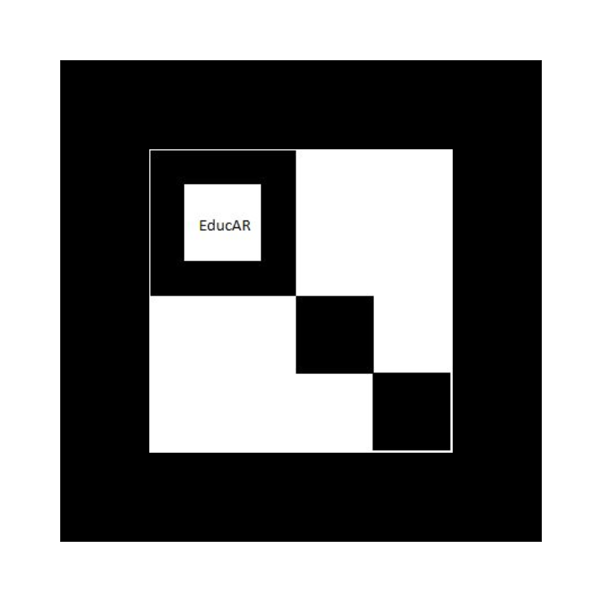

Visualización en realidad aumentada para explorar estos fascinantes objetos astrofísicos
Las estrellas de neutrones son sistemas astrofísicos muy interesantes donde se mezclan varias disciplinas de la física, como son la gravitación, el electromagnetismo y la mecánica cuántica.
Te presentamos aquí una secuencia de visualizaciones en realidad aumentada (RA) acerca de estos objetos y su intenso campo magnético. La acompañamos con una descripción sonora de las imágenes y una explicación de los fenómenos físicos mostrados.
Con esta breve presentación pretendemos abrir una puerta a tu curiosidad y entendimiento acerca de este fascinante mundo.
Puedes imprimirlo o mostrarlo en una pantalla diferente a la que usarás para la RA. Descárgalo haciendo clic en la imagen del marcador más abajo.
Un dispositivo móvil, tablet o computadora con navegador de internet moderno (Chrome, Firefox, Safari, etc.).
Necesaria para cargar la visualización y el contenido multimedia.
La cámara de tu dispositivo móvil, laptop o una webcam externa para captar el marcador.
Bocinas o auriculares para escuchar la descripción sonora y los efectos de la visualización.
Verifica que tu dispositivo tenga el audio activado y ajusta el volumen a un nivel adecuado.
Haz clic en el siguiente enlace para abrir la visualización en RA:
https://gpb-cosmo.github.io/visualizaciones/Pulsar/pulsar.html
Si la cámara no se activa automáticamente, selecciona la opción "Permitir usar la cámara" cuando el navegador lo solicite.
Cuando la cámara esté funcionando, coloca el marcador frente a ella para que sea reconocido.
Una vez reconocido el marcador, podrás observar y escuchar la visualización en realidad aumentada.
Modula el volumen de tu dispositivo para escuchar claramente la descripción y los efectos de sonido.
Puedes mover el marcador, acercarlo, alejarlo o girarlo para observar distintos ángulos y detalles de la visualización.
Si la página presenta problemas de audio o visualización tras la carga inicial, vuelve a cargarla para asegurar su correcto funcionamiento.
Haz clic en la imagen para descargar el marcador necesario para la visualización en realidad aumentada.
